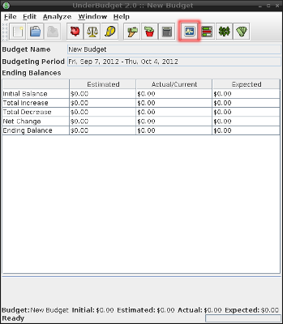

|  |
Using the estimated and actual amounts from each estimate, UnderBudget will calculate the estimated and actual ending balances. That is, the estimated or actual sum of earnings less the sum of expenses. Additionally, UnderBudget will calculate an expected balance. The expected balance is the estimated balance while takeing into account estimates that have already gone over-budget ,where the actual amount is used. |